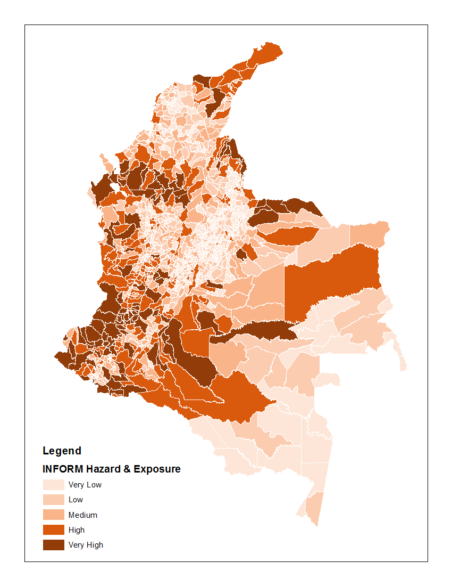
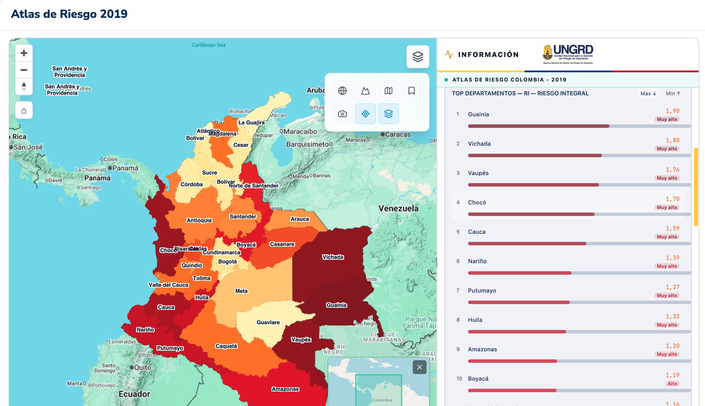
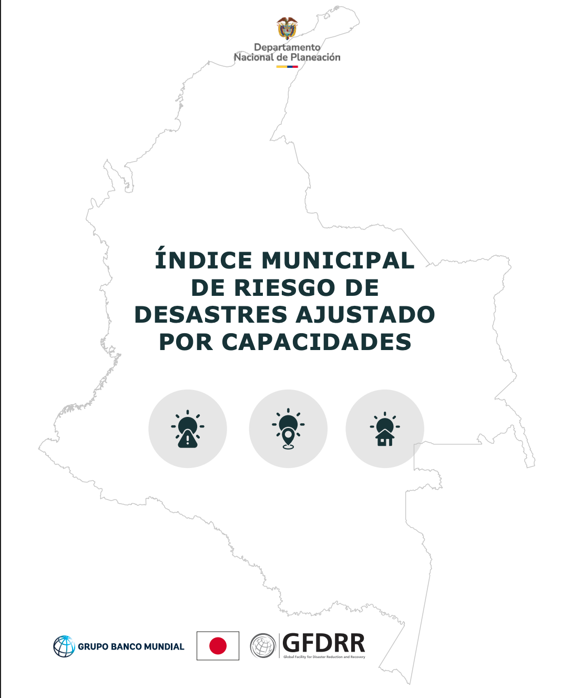
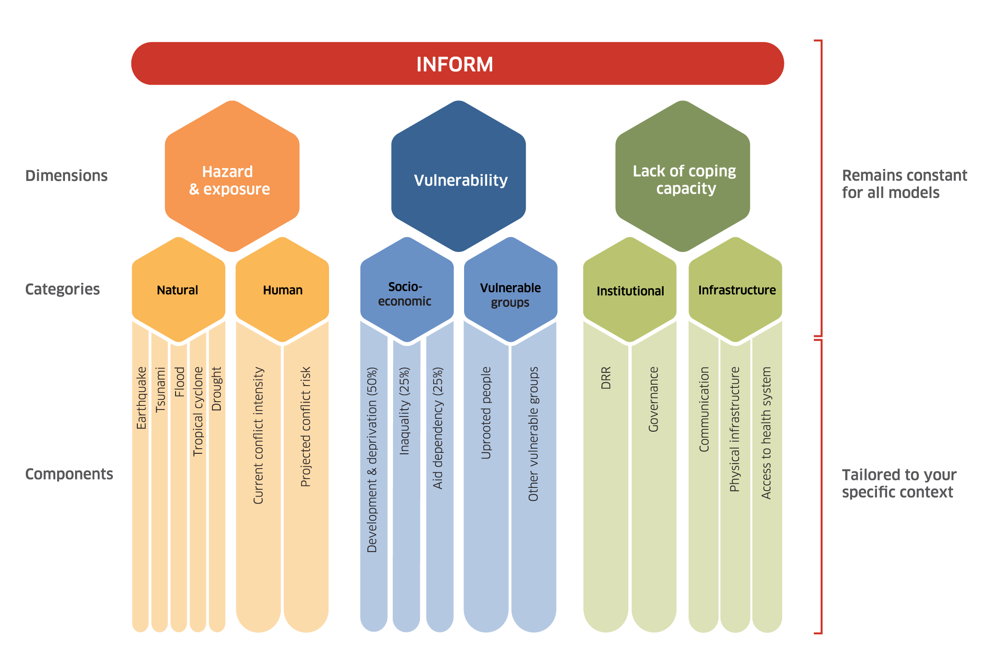
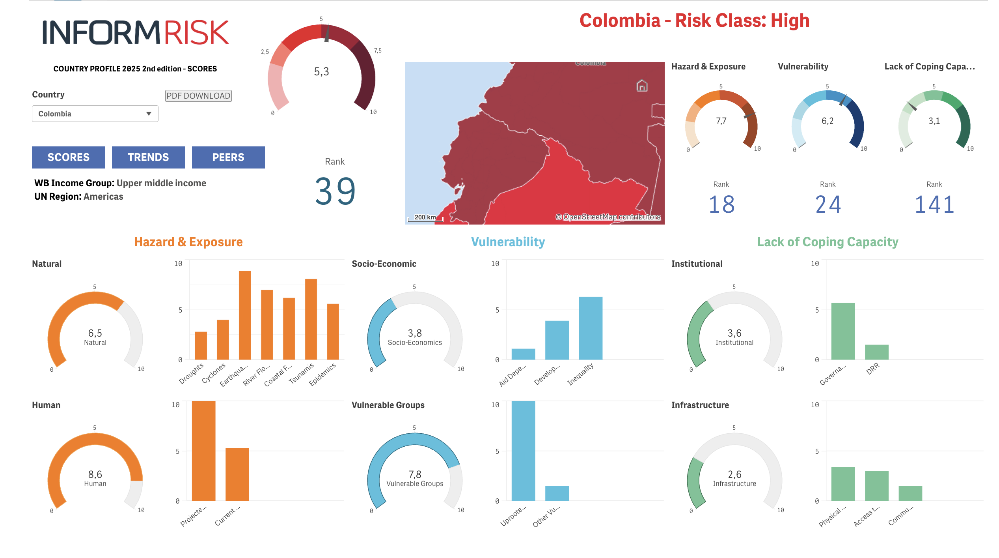
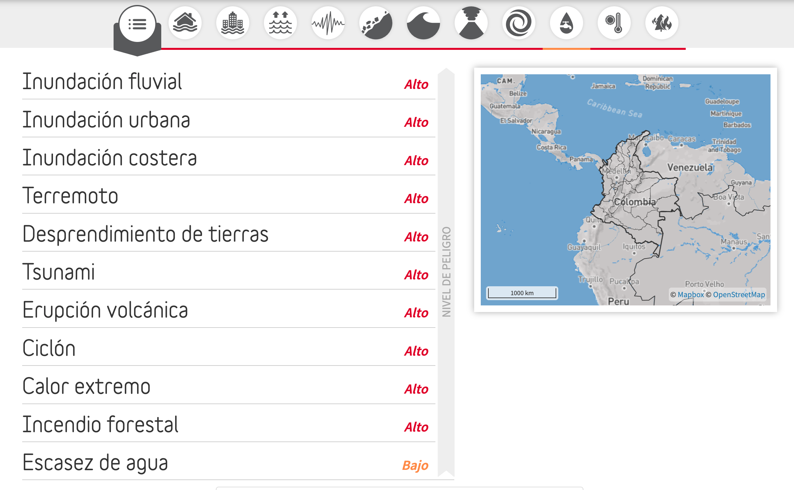
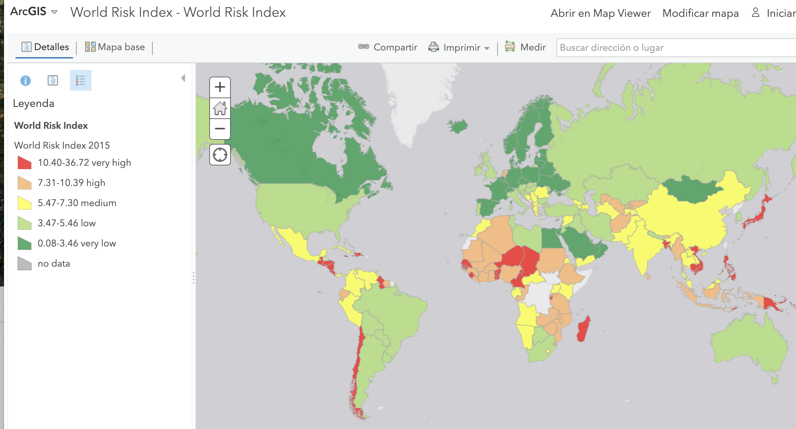
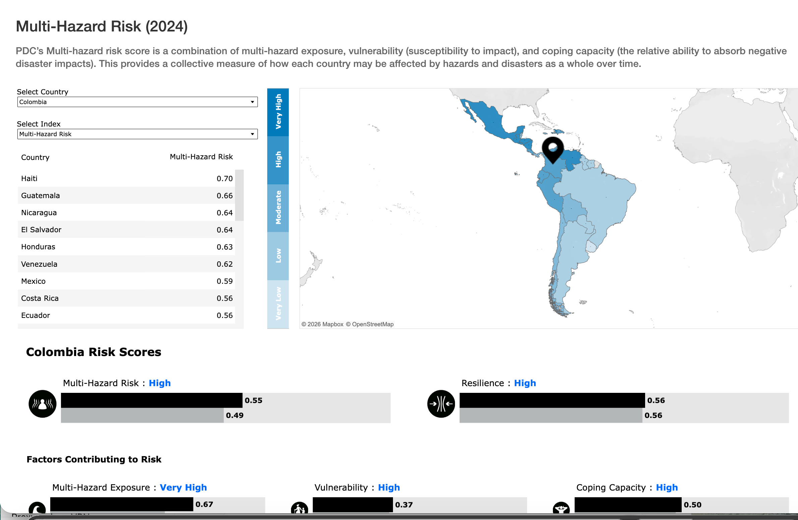

Indicadores de riesgo de desastres
Clasificación de riesgo departamental y municipal de Colombia
- Atlas de Riesgo de Colombia: revelando los desastres latentes. Unidad Nacional para la Gestión del Riesgo de Desastres. 2018. Link.
- COLOMBIA – Censo Nacional de Población y Vivienda – CNPV – 2018. Link.
- Datos del Consolidado de atención a emergencias. UNGRD. Link.
- DESINVENTAR. Base de datos de pérdidas históricas en Colombia (período 1970-2011). Link.
- CIPE. Colombia Risk Analysis: Subnational and Regional Risk Indices.Link. Link.

Atlas del Riesgo de Colombia: Revelando los Desastres Latentes. Link

Índice Municipal del Riesgo de Desastres Ajustado por Capacidades (2019). Link

Colombia: National Disaster Preparedness Baseline Assessment - A data-driven tool for assessing risk and building lasting resilience. Link

Colombia: National Disaster Preparedness Baseline Assessment - A data-driven tool for assessing risk and building lasting resilience. Link

Clasificaciones internacionales: Perfil de riesgo de Colombia
Colombia es un país con riesgo mundial de desastres medio alto a muy alto (Tabla 1) debido principalmente a su elevada exposición y vulnerabilidad.
La diferencia entre los resultados no representa necesariamente una contradicción. El WorldRiskIndex mide riesgo estructural de desastre; INFORM incorpora crisis humanitarias y capacidad de respuesta; Germanwatch mide daños meteorológicos ya ocurridos; ND-GAIN evalúa vulnerabilidad y preparación climática; y PDC se utiliza principalmente para análisis multiamenaza territorial y planificación operativa.
Colombia en índices internacionales de riesgo de desastres
Comparativo de la posición de Colombia en los principales rankings globales de riesgo de desastres, cambio climático y vulnerabilidad. Fuentes con edición 2024–2026.
Riesgo de desastres y multiamenaza
| Índice | Indicador / dimensión | Colombia |
|---|---|---|
| WorldRiskIndex 2024 Bündnis Entwicklung Hilft / Univ. Bochum | Riesgo de desastre por amenazas naturales: combina exposición, vulnerabilidad, capacidad de afrontamiento y adaptación | Muy alto #4 de 193 países · score 37,8 Mayor riesgo en las Américas |
| INFORM Risk Index 2026 European Commission JRC / DRMKC | Riesgo de crisis humanitaria y desastre: hazards y exposición, vulnerabilidad y capacidad de respuesta institucional | Alto Score ~5,3 / 10 · posición media-alta Hazard humano (conflicto): muy alto |
| Pacific Disaster Center GRVI 2024 PDC – Global Risk & Vulnerability Index | Riesgo multiamenaza: combina exposición a múltiples amenazas, vulnerabilidad y capacidad de afrontamiento | Moderado-alto Clase de riesgo moderada a alta Alta exposición; capacidad coping media |
| ThinkHazard! (GFDRR / World Bank) Global Facility for Disaster Reduction and Recovery | Nivel de amenaza por tipo de peligro natural a nivel nacional | Alto en 10 amenazas Inundación, sismo, deslizamiento, tsunami, volcán, ciclón, calor extremo, incendio |
Riesgo climático y adaptación
| Índice | Indicador / dimensión | Colombia |
|---|---|---|
| Climate Risk Index 2026 Germanwatch | Impacto acumulado de eventos meteorológicos extremos (1995–2024): muertes, afectados y pérdidas económicas absolutas y relativas | Alto riesgo crónico No entre top-20 globales; afectaciones recurrentes por inundaciones y deslizamientos |
| ND-GAIN Country Index 2022 University of Notre Dame | Vulnerabilidad al cambio climático y preparación (readiness) para adaptarse: combina 45 indicadores de vulnerabilidad y 36 de preparación | Moderado-favorable #92 de 182 países · score 48,7 Vulnerabilidad baja-media; readiness media |
| World Bank Climate Knowledge Portal World Bank Group | Riesgo económico por múltiples amenazas: porcentaje de población y activos expuestos a dos o más peligros simultáneos | Muy alto #10 global en riesgo económico multiamenaza 84% poblac. / 86% activos en zona ≥2 amenazas |
Paz, fragilidad y capacidad institucional
| Índice | Indicador / dimensión | Colombia |
|---|---|---|
| Global Peace Index 2026 Institute for Economics & Peace | Nivel de paz societal, conflicto activo y militarización; incide en la capacidad de respuesta ante desastres y conflictos socioambientales | Bajo (poco pacífico) #140 de 163 países · score 2,735 Peor desempeño de América del Sur |
| INFORM Severity Index (mayo 2026) ACAPS / European Commission JRC | Severidad de crisis humanitarias activas: impacto, condiciones de afectados y complejidad del contexto | Severo Crisis activa catalogada por desplazamiento interno y conflicto armado persistente |
Muy alto / Crítico
Alto
Moderado-alto
Moderado
Bajo-moderado
Pacific Disaster Center
- Colombia’s data-driven approach to creating safer, more resilient communities. Link.
- NDPBA Colombia Final Report. 2025. Link.
- Pacific Disaster Center Multi Risk index 2024. Link.
DRMKC - Disaster Risk Management Knowledge Centre- Inform Risk
- DRMKC - Disaster Risk Management Knowledge Centre. Link
- Inform Risk Index. Link. Link.
- Inform Subnational Risk. Link.
- Latin America and Caribbean. Link.
- INFORM subnational model of Colombia 2015 Link.

INFORM Risk - Country Risk Profile: Colombia. Dashboard interactivo con el detalle de riesgo, peligro y exposición, vulnerabilidad y falta de capacidad de respuesta. Link.

World Bank
Banco Mundial. Think hazard. Perfil de Colombia. Link
/

World Risk Index

The World Risk report
- The World Risk report. Link.


Pacific Disaster Center
- Multi-Hazard Risk (2024). Link

World Economic Forum
- Global Risks Report 2024. Link


Climate Risk Index 2026
The Climate Risk Index (CRI) ranks countries by the human and economic toll of extreme weather. The latest edition highlights increasing losses and the urgent need for stronger climate resilience and action. Climate Risk Index: Most Affected Countries:
Otras clasificaciones, recursos, e Índicadores mundiales
- ND-GAIN Country Index. Perfil de Colombia. University of Notre Dame. Link.
- ODS. Link
- United Nations Global Risk Report. Link
- Mapbiomas. Link
Indicadores latinoamericanos
- BID. Link
- Risk Monitor. BID. Link
- Atlas de riesgos. Secretaría de Gestión Integral de Riesgos y Protección Civil, Gobierno de la Ciudad de México. Link
EmDat
- EM-DAT International Disaster Database. Link.

Videos
Otras fuentes de datos en riesgo de desastres
Global Assessment Report on Disaster Risk Reduction (GAR)
- Plataforma para las Américas. Link.
- Atlas de Riesgos Climáticos para Chile. Link.
- Mapa digital de amenazas y desastres de Chile. Link.
- NatCatSERVICE Database. Link.
- SIGMA (Swiss Re). Link.
- The Lloyd’s Register Foundation World Risk Poll. Link.
- GLobal unique disaster IDEntifier (GLIDE). Link.
- Metabuscador Climate Adapt. Link.
- GDIS, a global dataset of geocoded disaster locations. Scientific Data. 2021. Link.
- World tectonic plates and boundaries. Github. Link
- LEILA – Librería de calidad de datos. DNP. Link
- OECD. Link.
- OECD One. Link. Link. Tutorials. Co-creation project
- United Nations Climate Change. Link.
- Lecturas:
- Worldwide disaster loss and damage databases: A systematic review. 2021. Link.
- Ejemplos de indicadores estatales o departamentales
- Natural Hazard Risk Assessment. Weather.gov. Link
Lecturas
- Natural hazard risk assessments at the global scale. 2020. NHESS. Link.
- Is the number of global natural disasters increasing? 2022. Environmental Hazards. Link.
- Incompleteness of natural disaster data and its implications on the interpretation of trends. 2024. Environmental Hazards. Link.
- The number of natural disasters is zero: commentary to “is the number of global natural disasters increasing?” 2024. Link.
- Comments on the short communication: The number of natural disasters is zero: commentary to “Is the number of global natural disasters increasing?” 2025. Link.
- Is the number of natural disasters increasing? 2024. Link.
- Weather-related disasters increase over past 50 years, causing more damage but fewer deaths. 2021. OMS. Link.
- Official statistics are vastly undercounting deaths from extreme weather. Nature 2025 Link